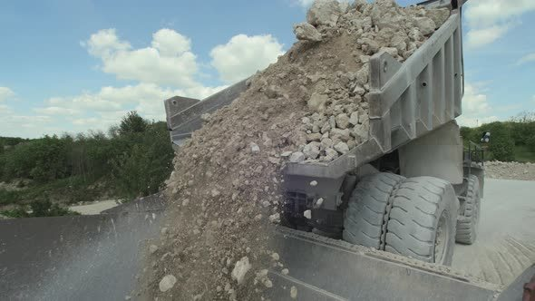
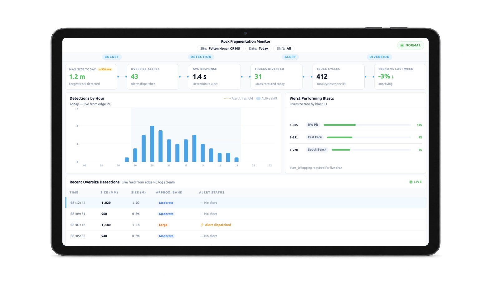

Production Intelligence
Accelerate Production. Increase Throughput.
Fragmentation quality affects loading efficiency, haulage performance, crusher utilisation, processing throughput and ultimately the cost of every tonne produced.
Production Intelligence continuously measures blast outcomes, tracks downstream operational performance and provides the intelligence needed to optimise future blasts, eliminate bottlenecks and continuously increase production.
Rock Fragmentation
Analysis
Turning Every Blast Into Data For Production Optimisation
Every truck load provides valuable insight into blast performance. iottag analyses every bucket and truck load in real time, measuring rock fragmentation, oversize distribution and overall blast quality as material moves through the production process.
When oversized material is detected, operators are alerted via in-cabin display, in real time. Affected trucks are automatically diverted to secondary crusher. This reduces crusher blockages, minimises downtime and helps maintain consistent production flow.
Every blast becomes a measurable learning opportunity. iottag continuously measures production outcomes and feeds this intelligence back to drill and blast engineers, enabling continuous improvements in blast design, fragmentation quality, production efficiency and operational performance.
Every Blast
Influences Production
Fragmentation quality influences every stage of the production process, from excavator productivity and truck cycle times through to crusher performance, processing efficiency and production throughput.
Understanding this relationship enables operations to identify where production is being lost and where improvements will deliver the greatest operational benefit.
Optimise Loading Performance
Loading efficiency is directly influenced by fragmentation quality.
Well-fragmented material is easier to dig, faster to load and moves more efficiently through the operation.
iottag helps organisations understand how blast performance affects excavator productivity, bucket fill, loading cycle times and tonnes moved per hour, providing the insight needed to continuously improve loading performance.
Maximise Haul &
Crusher Availability
Maintaining consistent crusher throughput is critical to production performance.
By removing oversized material from the production stream before it reaches the primary crusher, iottag helps reduce production interruptions, improve crusher utilisation and maximise tonnes processed throughout every shift.

Production Intelligence Dashboards
Each role requires specific operational insights.
Every dashboard is designed to provide the right operational intelligence to the people responsible for improving production performance.


Machine Operators
- Fragmentation map
- Oversize alerts
- Truck routing
- Active production

Supervisors
- Crusher utilisation
- Queue times
- Loading performance
- Shift KPIs
- Production delays

Site Management
- Tonnes per hour
- Cost per tonne
- Blast comparison
- Diggability trends
- Equipment productivity

Corporate
- Multi-site benchmarking
- Quarry benchmarking
- Contractor benchmarking
- Blast design performance
- Production benchmarking
- Executive KPIs
Continuous
Production Optimisation
Every blast provides an opportunity to improve the next.
By continuously connecting fragmentation quality with downstream production performance, organisations gain objective evidence of what is working, where production is being constrained and how future blast designs can be improved.
Production Intelligence supports continuous improvement across:
Blast Design
Fragmentation Quality
Loading Efficiency
Haulage Performance
Crusher Throughput
Processing Performance
Equipment Utilisation
Production Output

Accelerate Production.
Leverage Operational Intelligence
Understand fragmentation, optimise blast performance and continuously improve loading efficiency, crusher throughput and production outcomes across your operation.